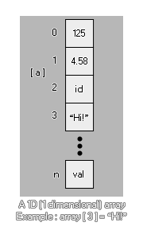
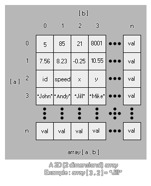

Arrays may seem confusing at first, but they can be extremely useful and are an essential part of making games. Why? Well, here are just a few things that would be impossible without arrays -
That's just the tip of the iceberg as arrays are one of the most
fundamental and useful programming tools you can use, and you'd be
surprised at the applications they can have! Let's find out a bit
more about them then...
Okay, we can use an array for those things mentioned above, but
what is an array? What does it look like? Well, something like
this...

array[0] = 1.25;
This is a 1D (one dimensional) array which we are now going to
break down the parts of to see what it means:
array
This is the array's name. Just like any other variable, it can be
anything you want from simply "a" to "mymumscow".
[0]
This is the position within the array that we are checking or
changing. You see, an array is basically a container with a number
of spaces to store values, and each position in the container has a
specific number to identify it, which is what we put in the [].
It's worth noting that an array always starts at 0 and can
never be negative! Now let's expand our array to include
different positions...
array[2] = 0;
array[1] = 0;
array[0] = 0;
Our array now contains three positions (0, 1 and 2) and we have
initialized our array to 0. What does that mean? Well, an array has
to be initialized before we can use it or GameMaker:
Studio will give us an error. Initializing an array just means
that we give each position of the array an initial value in
preparation for it to be used elsewhere in the object or code. This
is important to remember as it means that you have to do a certain
amount of planning before using arrays, but it is easy enough to
initialize one using a repeat loop like this...
var i;
i = 9;
repeat(10)
{
array[i] = 0;
i -= 1;
}
This simple code will initialize a ten position array (0-9) to 0,
in that each position in the array contains the value 0. You will
notice that the array has been initialised backwards, with
the last value being defined first. This is not strictly necessary
but is the optimal way to do it as it will reserve a space in
memory that is the exact size of the array, whereas if you
initialize an array from 0 upwards, the memory has to be
re-allocated for every additional value added. The speed difference
is negligible for smaller arrays, but larger ones should be
optimised as much as possible in this way.
But what if we want to initialize the array with different values
for each position? Well for that we have to manually type each and
every position ourselves, but there is a nice trick to help us keep
track of things there too!
count = 3;
array[count] = "you?"
count -= 1;
array[count] = "are "
count -= 1;
array[count] = "How "
count -= 1;
array[count] = "Hello!"
count -= 1;
As you can see, we haven't used any numbers in the actual array,
rather a variable to count down through the values. This has two
benefits - One, we don't have to worry about typos or errors when
writing out the array positions, and two, we have in the variable
"count" the number of positions that the array contains, which can
then be used elsewhere in the object. Very useful!
With that done how do we use an array for practical things? Exactly
the same as we would use a normal variable, as shown by the
following examples:
total = array[0] + array[5]; //Add two array values
together
if (array[9]) == 10 //Check an array value
{
//do something
}
draw_text(32, 32, array[3]); //draw an array value
Since arrays are numbered consecutively, this means you can loop
through them to perform extra actions too, like we did to
initialize it:
var total = 0;
for (var i = 0; i < 10; i++;)
{
total += array[i];
draw_text(32, 32 + (i * 32), array[i]);
}
draw_text(32, 32 + (i * 32), total);
The above code will add up all the values in our array, draw each
of them and draw the total value at the end.
Now that we know what a normal array looks like, let's look at a
2D (two dimensional) array.

array[0, 0] = 5;
As before, each number points to a position within the array, only
this time each position has an "a" and "b" coordinate. Think
of it as an extra dimension to our container, as it now has height
and width whereas the 1D array only has height. Here is an
extended example:
array[1, 2] = 1;
array[1, 1] = "hello";
array[1, 0] = 55.5;
array[0, 2] = sprite_index;
array[0, 1] = "world";
array[0, 0] = -67.89;
A 2D array needs to be initialised before use, the same as a 1D
array, and can hold real numbers, strings and constants, just like
any other variable, making them ideal candidates for any game that
needs to store large amounts of data in an easily accessible way
(remember, you can loop through an array easily). Here is one final
example of how this may be used in an actual game... Say you want
to spawn four different enemies at four different points in your
game depending on a random value. Well, we can use a 2D array to do
this and save writing out a load of code.
First we should initialize the array we are going to use in the
create event of our "controller" object:
enemy[3, 2] = 448; //y position
enemy[3, 1] = 32; //x position
enemy[3, 0] = obj_Slime; //Object
enemy[2, 2] = 448;
enemy[2, 1] = 608;
enemy[2, 0] = obj_Skeleton;
enemy[1, 2] = 32;
enemy[1, 1] = 608;
enemy[1, 0] = obj_Knight;
enemy[0, 2] = 32;
enemy[0, 1] = 32;
enemy[0, 0] = obj_Ogre;
We now have the objects to spawn instances of and their
corresponding x and y spawn coordinates within the room all stored
in our array. This can now be used as follows in another event of
the controller object (an alarm for example, or a key press
event):
var i;
i = irandom(3); //get a random number from 0 to 4
instance_create(enemy[i, 1], enemy[i, 2], enemy[i, 0]); //Use the
array to create the object
That short code will now spawn a random enemy in the game room, and
it uses far less code than an "if / then / else" structure or even
a "switch", and as the array is initialized all together in the
create event it is MUCH easier to edit and change any of those
values as they are not hard-coded into the rest of the object
codes. It is also worth noting that the length of each 2D array can
be different, so you can have an array with a height of 2, but
entry 0 could be 2 in length, entry 1 could be 4 in length and
entry 2 could be 3 in length:
array[0, 0] = 1;
array[0, 1] = 2;
array[1, 0] = "one";
array[1, 1] = "two";
array[1, 2] = "three";
array[1, 3] = "four";
array[2, 0] = "1";
array[2, 1] = "2";
array[2, 2] = "3";
Just like normal variables, you can pass arrays through to
scripts to be used and then returned to the instance that called
the script. To do this, you simply have to specify the array
variable (no need for each of the individual entries, nor the []
brackets) and the array will be passed by reference into the
script. However, should you change any of the array values, the
array will be copied into a temporary array just for the script.
Note the use of the word temporary here! You are not
actually passing the array itself into the script (as you would a
variable), but instead you are requesting that the script create a
copy of this array, which you will change in the script.
This means that you must always return the array from the
script if you wish to change any array values.
NOTE: Due to the way that this works internally, passing arrays to scripts may affect performance, especially if the array is very large. So use this functionality with care!
As an example, consider the following code. First we create the
array we want to use, and then we pass that array to the
script:
for (var i = 9; i > -1; i--;)
{
a[i] = i;
}
scr_Return_Array(a);
The script itself is something simple like:
for (var i = 9; i > -1; i--;)
{
a[i] = i * 100;
}
Now you would expect the final array to hold the values 900, 800,
700, etc... BUT this will not be the case, since we did not
return the array from the script, so all we changed was the
temporary copy that was created when we passed the array as an
argument into the script. To rectify this we should have formatted
the code as follows:
for (var i = 9; i > -1; i--;)
{
a[i] = i;
}
a = scr_Return_Array(a);
And the script should now look like this:
for (var i = 9; i > -1; i--;)
{
argument0[i] = i * 100;
}
return argument0;
NOTE: The above is not necessary if you are not changing any of the array values, but rather simply referencing them. Referencing an array will not copy it and be faster to parse.
You can also delete an array simply by "re-assigning" the
variable that defines it to a single value. This will free up the
memory associated with all the entries and values for that array.
For example:
//Create the array for (var i = 9; i > -1;
i--;)
{
a[i] = i;
}
//Delete the array a = 0;
It is also worth noting that you can use the accessor @ to reference an array from a script and change its values directly, which saves the CPU overhead of having it copied into the script. You can find out more information on accessors and how they work, along with an example for arrays, from the following page:
There are a few functions associated with the use of arrays too. These are designed to give you flexibility in your code, and will permit you to create more functional and dynamic arrays when making your games. These functions are: